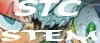
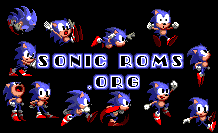
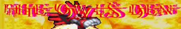

MENU >> Links >> Visit other cool Sonic sites! >>Sonic Links - Non-Sonic Links - Link to the Sonic Stadium |
Which brings you to this fine cave, my fellow Sonic mentalist. Included on this very page are some of the finest Sonic sites available on the web! Click on any of the links to be taken to the corresponding site. Just tell 'em the Dreadknuxster sent ya!
Maybe you already have a Sonic website and have come across this page to link my site to yours. It's cool with me, all you have to do is go to the 'Link to the Stadium' section and you'll find all sorts of banners to plaster on your website. Also if you wish to offer your website as a link in this page go to the Universal Form and tell me your name (or nickname), e-mail address, your site name, and the place of any banners or buttons you may want to put in here to make your link look pretty. ahem...
I'm not the only Sonic fan in the Universe. God, no... my friend, there are hundreds, possibly millions of Sonic fans just like you and me, who also have their own cool Sonic sites!Sonic Links
Sonic Links!

The Official Sonic Team Website.

The Official Sonic The Comic Website.
(The BEST Sonic Comic out there, and guess what? It's British!!! ^____^)

My buddy Kulock's website. Run by someone just as insane as me :P
Lots of neat things to see in there, and not just all Sonic. Check it out.
J-Walker's Sonic Page. A long standing site, and well worth looking in.

This site is one of the best for finding out anything about Sonic (apart from the Stadium of course ;D). Kedzie runs it, decent webmaster. You must have visited this site at least once.
The Hidden Palace. A nice little website about Sonic and Dreamcast, and well suited to Dreamkey browsers too. Worth a look.

Need a Sonic ROM that isn't listed in the Stadium? Wanna see a site that has interviews with *WOAH!!* Nigel Kitching, of STC fame? Go to Dans Webz, which Sonic Roms.org is a part of.
Sonic Planet's just had an overhaul, and I must say it looks very nice. Some pretty original stuff in there too, go see.

Sonic Secrets UK is created by a fellow English companion, Ian Bennet. Take a look at his site, it's very good. It doesn't just mention Sonic, but all of Sonic Team's games on Dreamcast too.

Sunset Valley is a well built site, and definitely worth checking into every now and again. Make sure you do, there's a lot of valuable stuff in there.

Sonic News is not only up to date with, well, Sonic news, but also has lots of info about a whole range of Sonic info, much like the Sonic Stadium has now. If you're looking for a site like this, go to Sonic News now.

Iris & Sonic's Vacation Spot reminds me much of this site. It has lots of good info for the common Sonic fan to dig into, and plenty more for the avid fan too. Great for a laugh, come here for a fresh look in the Sonic world.

This sweet is small site holds a lot of precious sprite sheets should you think of making a Fan Game or something like that. He has a lot of hoaxes too, most of which are hosting right here in Sonic Hoaxers Club. Some are strange, and others are mental! A great site by NightOwl, a good pal of Dreadknux.
*If you wanna be linked to the Stadium, just tell Dreadknux!*
dreadknux@knuckles.co.uk
Fill in the form!